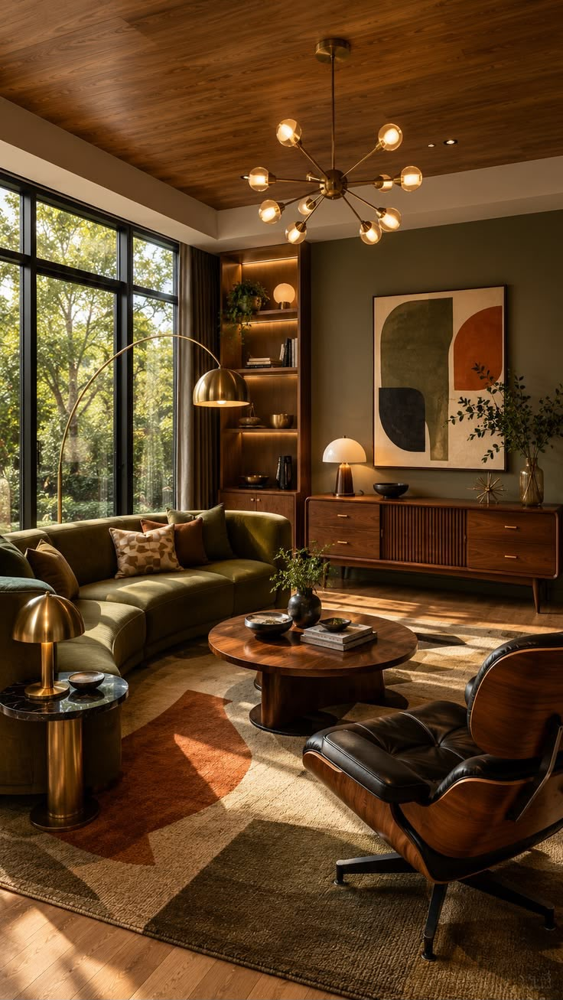
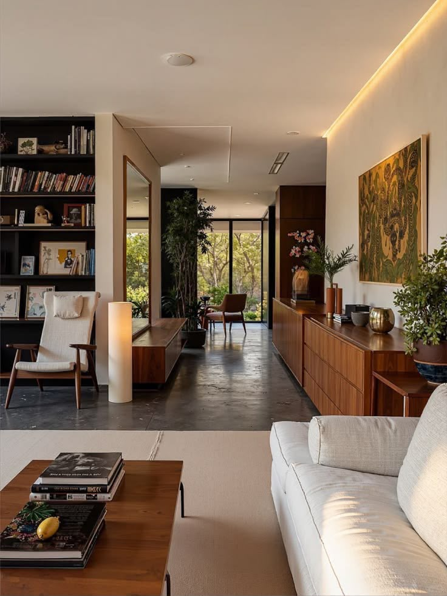

Olive & Oak is a contemporary interior design studio specialising in warm, sophisticated spaces inspired by natural materials, earthy tones and timeless forms.
We create thoughtfully designed spaces that balance elegance, comfort, and functionality. From concept to completion, we work closely with our clients to turn their dream spaces into reality.
Explore Portfolio
